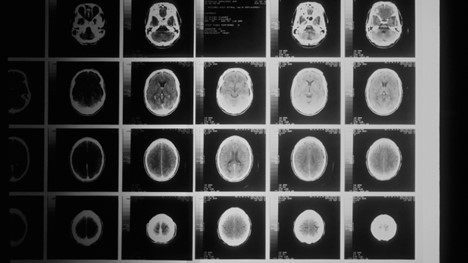

About Me
Hello, my name is Mel Viator. I am currently a graduate student at Boston University, receiving a Master of Science in Applied Data Analytics. Thus far in my program, I have enjoyed studying machine learning methods, algorithm design and analysis, data mining, among other data science concepts. Additionally, I currently work as a Data Scientist Masters Student at the Veterans Health Administration where I perform analyzes to support healthcare professionals with research projects. From my education and work experience, I have developed a strong background in Python, R, Java, and SQL. I am especially interested in data science applications in the healthcare sector, as seen in a couple of my data science projects below. This portfolio summarizes a few of the data science projects I have created throughout my time as a Masters student.
Summer 2022
DNA Sequence Classification with CNN

In this project, I utilized deep learning techniques to accurately and efficiently classify DNA sequences with histone occupancy. The project uses Keras to implement two neural networks: a simple CNN model and a hybrid of CNN to include a LSTM layer. For each neural network model, I experimented with two encoding methods - one-hot encoding and k-mers encoding - to embed the DNA sequences into the models. By experimenting with various preprocessing techniques, models, and hyperparameters, I was able to compare the effectiveness of the models in classifying the DNA sequences.
Spring 2022
Understanding the Shortest Path Problem
The shortest path problem is an infamous question in graph theory that aims to find the optimal paths among a network of vertices in a graph. While Dijkstra’s algorithm successfully finds the shortest path, the time complexity is inefficient. Contrastingly, Rapidly-Exploring Random Trees (RRT) has a time complexity that is asymptotically superior in comparison to Dijkstra. However, RRT does not necessarily find the most optimal path. To overcome the limitations of these algorithms, this paper proposes and implements the combination of RRT + Dijkstra to solve the shortest path problem in a practical runtime.
Spring 2022
Workplace Gender Discrimination Analysis

The purpose of this analysis is to investigate the dataset used in a gender discrimination case against Houston College of Medicine to analyze and conduct inferences about gender pay and promotion inequalities. This project implements statistical hypotheses, confidence intervals, multiple regression models and other statistical analyses in R to understand the population mean salary differences between male and female university doctors, predict a university doctor's salary and determine which variables are the most significant predictors, and examine the proportion of full professors that are male versus female.
Spring 2022
NLP Keyword Extraction with BERT
In this project, I utilized the BERT package to implement NLP techniques on TED Talk videos. First, I executed the self-supervised framework, Wav2vec, to convert the TED Talk videos into a text transcript. Next, I used the KeyBERT package to extract meaningful keywords from 1) the full TED Talk video transcript and 2) a summary of the TED Talk video. To analyze the results of the NLP techniques, I utilized cosine similarity to understand the similarity between the two keyword groups as well as the accuracy of the 'BERT keywords' in comparison to 'human keywords.'
Fall 2021
Classification of Breast Cancer Tumors

The objective of this analysis is to research and reproduce machine learning classification models that will accurately predict whether a tumor is malignant or benign based on a set of features collected from the imaging test. In this project, I begin by exploring the dataset and understanding the distribution and correlation of the variables included in the dataset. Next, I utilized Sklearn and Keras to develop three machine learning classifiers - Nearest Neighbor, Logistic Regression, and Artificial Neural Networks - and determine which model is most effective in predicting whether a tumor is malignant or benign.
Fall 2021
Analysis of World Happiness
The objective of this project is to utilize a dataset from the World Happiness Report to analyze countries’ happiness levels and the potential factors that influence happiness. This project examined the regions included in the dataset and how ladder score evolved for each region over the fifteen-year time period. Additionally, we tested the central limit theorem and various sampling methods to understand how sampling would affect the distribution of the dataset. This project was developed in R for statistical computing and graphics to communicate the results with visual representations.